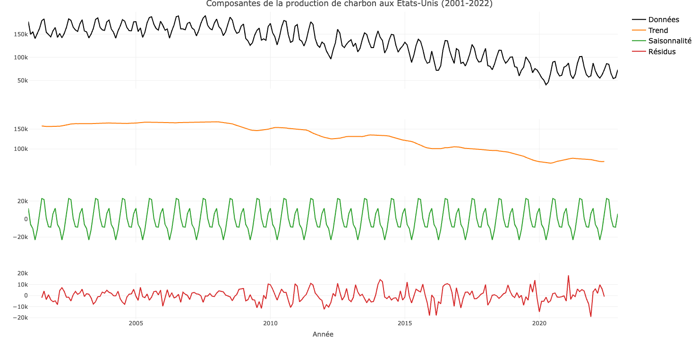

Série Temporelle : Production d’éléctricité par combustion aux États-Unis
Introduction
L’objectif est d’analyser et de modéliser statistiquement une série temporelle liée à la production d’électricité par combustion aux États-Unis entre 2001 et 2022. Nous étudions l’évolution de cette série au fil du temps afin d’identifier ses principales tendances et composantes. Cette série est issue du site web de l’Administration américaine de l’information sur l’énergie. Nous réalisons ensuite une application Shiny afin de visualiser les résultats interactivement.
Le dépot github du projet contenant le code est disponible ici.
Méthodologie
Ce projet a été réalisé en deux étapes majeures. Dans un premier temps, nous avons réalisé l’étude de la série temporelle, puis nous avons procédé à la construction de l’application.
Tendance de la série
Afin de modéliser la série, nous commençons par analyser la tendance. Nous utilisons un filtre de moyennes mobiles simples et centrées, ainsi qu’une régression des moyennes annuelles, dans le but de visualiser l’évolution générale de la série.
Les moyennes mobiles permettent de lisser la série et d’atténuer les fluctuations aléatoires. La moyenne mobile simple est calculée sur une fenêtre fixe, tandis que la moyenne mobile centrée est déterminée de manière symétrique autour de chaque point. Cela permet d’identifier la tendance sous-jacente de la série entre 2001 et 2022, qui s’est avérée être décroissante. On se sert également de la moyenne mobile pour éléminer la composante saisonnière de période \(p\) de notre série et réduire au maximum l’amplitude des fluctuations irrégulières.
La moyenne mobile qui s’ajuste le mieux à la série est celle d’ordre 12.
De plus, la courbe de régression des moyennes annuelles permet de modéliser la tendance à long terme de la série en s’appuyant sur les moyennes calculées pour chaque année. On trace sur notre nuage de point une courbe linéaire qui nous indique une tendance décroissante de la production d’éléctricité par combustion.
Décomposition de la série
À présent, nous procédons à la décomposition de notre série à l’aide d’un modèle additif. Il s’écrit de la manière suivante :
\[ y_i = f_i + s_i + e_i \quad \text{pour } i = 1, \dots, n \quad \text{avec } \sum_{j=1}^{p} s_j = 0 \quad \text{et} \quad \sum_{j=1}^{n} e_j = 0 \]
Dans ce modèle, l’amplitude de la composante saisonnière et du bruit reste constante au cours du temps. Cela se traduit graphiquement par des fluctuations autour de la tendance d’amplitude constante. L’utilisation de la méthode de la bande, qui consiste à tracer la courbe reliant les minima sur une période ainsi que celle reliant les maxima, a montré que ces deux courbes sont parallèles, indiquant ainsi que le modèle est additif.
On rappelle qu’une série chronologique résulte de trois composantes fondamentales : la tendance (\(f_i\)), la composante saisonnière (\(s_i\)) ou saisonnalité, et la composante résiduelle (\(e_i\)).
Nous analysons d’abord l’effet des saisons en calculant les coefficients de variation saisonnière (CVS). Ces variations, qui reviennent chaque année à la même période, sont influencées par des phénomènes naturels ou économiques (comme la météo ou les fêtes) mais n’ont pas d’impact durable sur la tendance.
Enfin, nous nous intéressons à la composante résiduelle, qui regroupe toutes les variations non expliquées par la tendance et la saisonnalité. Ces fluctuations peuvent être dues à des événements imprévus (crises économiques, accidents, conditions exceptionnelles) ou à des variations aléatoires.

Prévision de la série
L’objectif de cette étape est de réaliser deux prévisions (2022 et 2023) de la production d’électricité par combustion en utilisant trois méthodes différentes : Trend + Saison, ARMA et Holt-Winters.
La méthode Trend + Saison, identifie deux composantes principales dans notre série qui sont la tendance et la saisonnalité. La méthode ARMA repose sur l’idée que la production d’électricité à un instant donné dépend des valeurs passées et des erreurs passées. Pour garantir des prévisions optimales, nous avons sélectionné les paramètres du modèle ARMA en fonction des performances statistiques obtenues. Enfin, le modèle Holt-Winters est une extension de lissage exponentiel qui prend en compte trois éléments, la tendance, la saisonnalité et la moyenne ajustée de la série.
La prévision sur les données de 2022 a permis de comparer les valeurs estimées avec les valeurs réelles de la série, afin d’évaluer la précision des trois méthodes utilisées. Pour cela, nous avons calculé l’erreur quadratique moyenne (RMSE) pour chacune des méthodes, ce qui nous a permis d’identifier celle offrant les prévisions les plus fiables.
Parmi les trois approches testées, la méthode Trend + Saison s’est révélée être la plus performante, car elle a obtenu l’erreur quadratique moyenne la plus faible. Cela s’explique par sa capacité à capturer à la fois la tendance de long terme et les variations saisonnières, qui jouent un rôle clé dans l’évolution de la production d’électricité. En revanche, les modèles ARMA et Holt-Winters ont montré des écarts plus importants avec les valeurs réelles, probablement en raison de leurs hypothèses sous-jacentes qui s’adaptent moins bien aux dynamiques spécifiques de notre série temporelle.
Résultat
Ci-dessous, un aperçu de l’application réalisée pour visualiser la modélisation effectuée sur la série.